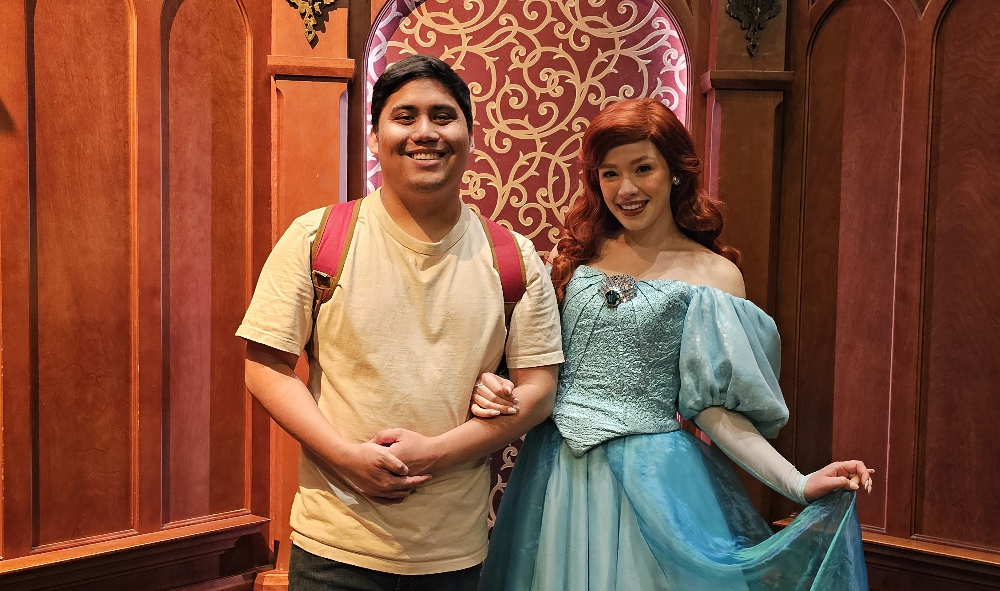

Who is Joshua Cachero
Dec 5th 2024
short read

Hi, I'm Joshua Cachero. I grew up in Los Angeles. I got my first laptop in august 2011 for my 12th birthday. Since then, I kept learning about technology and other stuff. In 2013, I learned about the Ruby Programming Language which was my first exposure to programming. Since then, I mainly have my skills rooted in IT, GNU + Linux, and C/C++ programming. I graduated in 2022 from Los Angeles Pierce College and will graduate in 2025 from Cal State Northridge with a bachelors degree in Computer Information Technology.